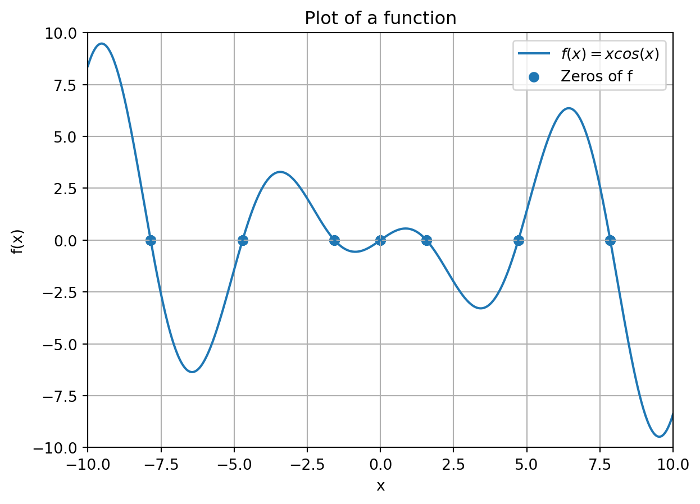
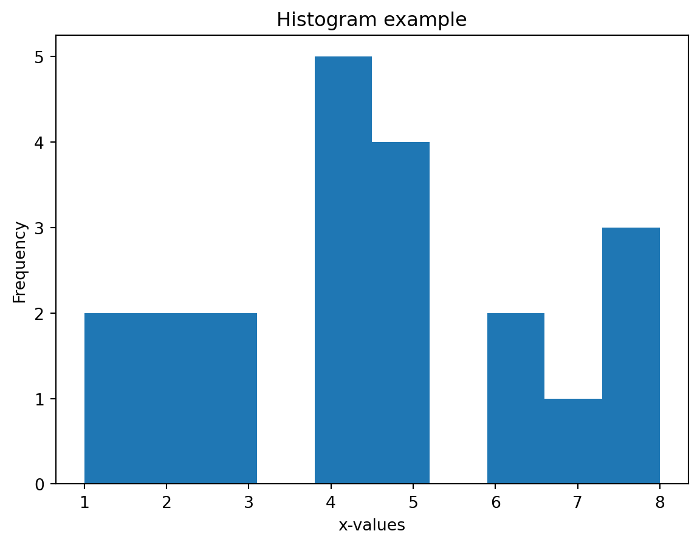
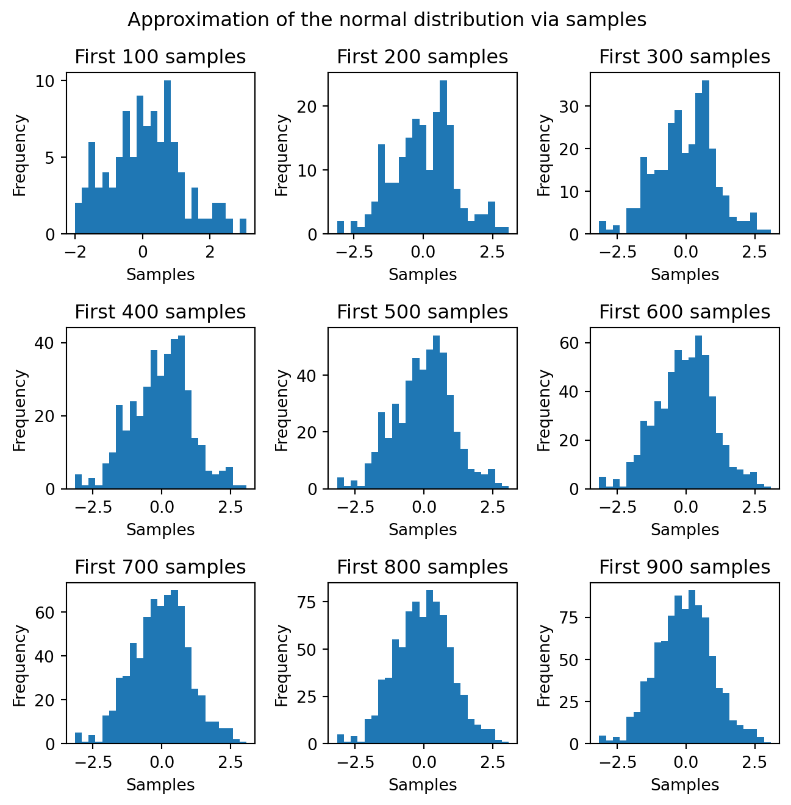
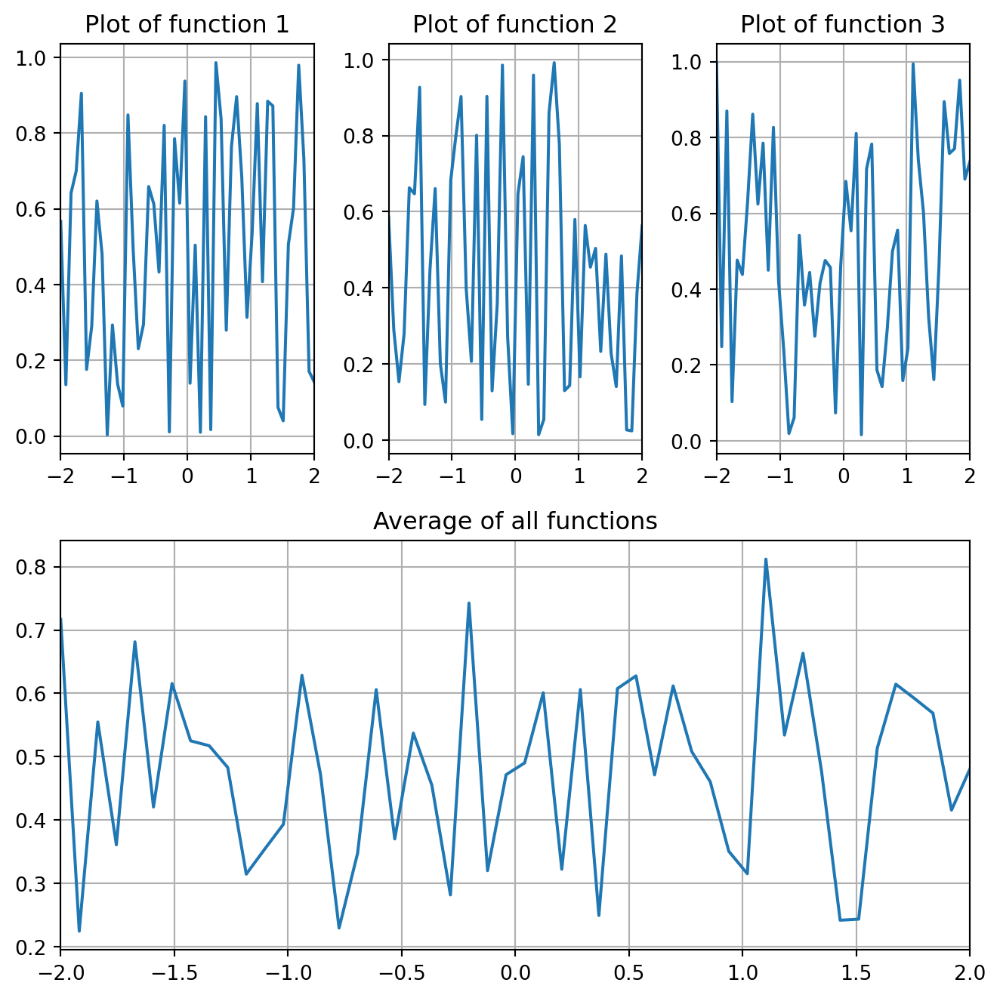
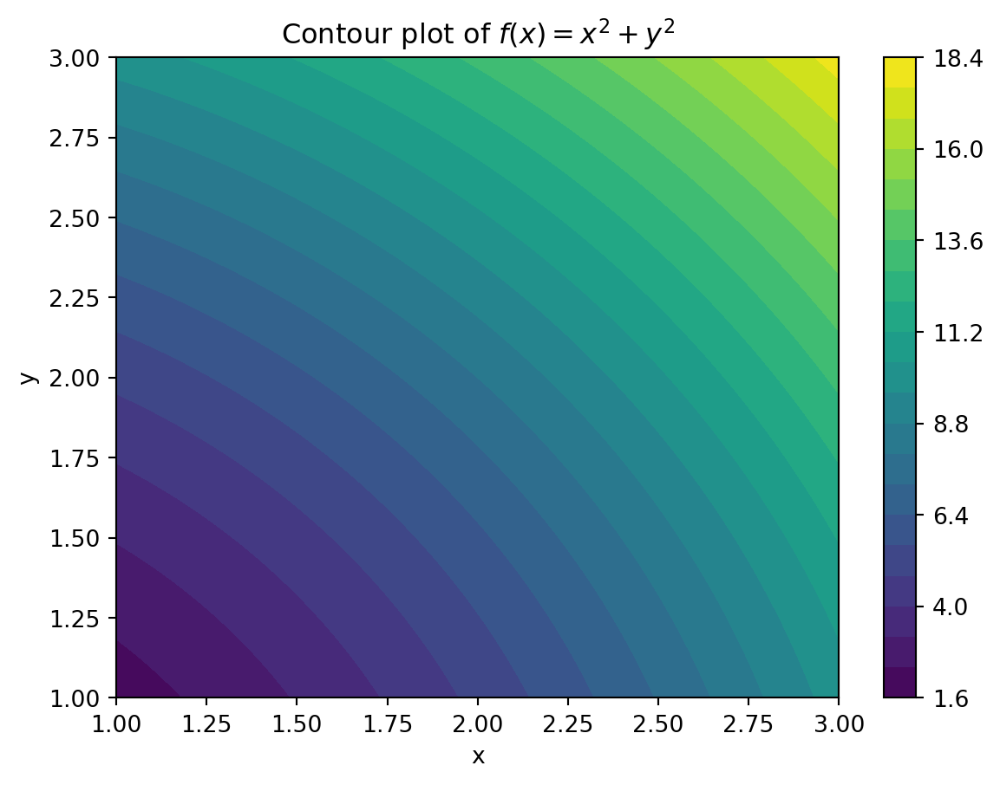

import numpy as np
import scipy.optimize as optimize
import matplotlib.pyplot as pltExercises Lecture 5 (Chapter 7)
Make sure to import Numpy, SciPy and Matplotlib to be able to complete all the exercises.
Question 1
Plot the function f(x) = x \cdot cos(x) on the interval [-10,10] and indicate all the roots of this function with a dot.
To compute all the roots in the interval [-10,10] use your solution to Question 1 from the Exercises corresponding to Lecture 4.
Your plot should look like this.

Question 2
For a one-dimensional array x, we can make a histogram of the values in x using plt.hist() as the next example illustrates. We can use the bins keyword argument to specify in how many “bins” the values should be divided.
x = np.array([1,1,4,2,6,5,4,8,8,8,7,6,5,4,3,4,5,3,4,2,5])
# Create figure
plt.figure()
# Create histogram
plt.hist(x,bins=10)
# Add labels and title
plt.xlabel("x-values")
plt.ylabel("Frequency")
plt.title("Histogram example")
# Show the plot
plt.show()
It is well known that if we draw many samples from a probability distribution, then the histogram of these samples should converge to the probability density function of the distribution. We will test this for the normal distribution.
The following code generates an array samples with n = 900 samples from the normal distribution with mean 0 and standard deviation 1. We will see more on sample generation in a later chapter of this book. For now, we will only need to work with the vector samples.
# Mean of the distribution
mean = 0
# Standard deviation of the distribution
std_dev = 1
# Generate random samples from normal distribution
n = 900
samples = np.random.normal(mean, std_dev, n) We will generate nine figures that show that the more samples we put in the histogram, the more the histogram will look like a bell-shaped normal distribution curve.
To this end, create a figure using plt.subplots() with nine subplots where plot i contains the first 100i samples of samples in a histogram with 25 bins. Avoid unnecessary repetition as much as possible.
Your figure should look like the one below. Note that because of the randomness involved in the sample generation, your histograms do not have to look exactly the same. What is important is that the figures (seem to) converge to the bell-shaped curve.

Question 3
Write a function plot_average that takes as input a two-dimensional array and two numbers a and b. Every row contains function values of n evenly-spaced points on the interval [a,b], that is, of points in x = np.linspace(a,b,n). In other words, row i = 1,\dots,m of the array are the function values y_{ij} = f_i(x_j) for j = 1,\dots,n. (We do not actually need to know the function f_i; we are only interested in the given values.)
The function plot_average should output a figure that has subplots of all the functions next to each other on the interval [a,b]. Under these plots, in the same figure, there should be a plot with the average of the functions, which is for j = 1,\dots,n the function defined by
\bar{f}(x_j) = \frac{1}{m} \sum_i f_i(x_j)
where m is the number of rows (or functions f_i) of the input array.
Your function should look like this for the given input. Also here, the numerical values in the plots might be different because of the randomness in the data generation.
# Generate some random data from [0,1]
y = np.random.rand(3,50)
a = -2
b = 2
plot_average(y,a,b)
Question 4
It is not always possible to use the matrices X and Y generated by mgrid directly for visualization of bivariate functions. For example, suppose that the function f : \mathbb{R}^2 \rightarrow \mathbb{R} is defined by taking as input an array of shape (1,2) containing two elements.
def f(x):
return x[:,0]**2 + x[:,1]**2The function f is vectorized in the sense that if we input a k \times 2 array, then it computes the function value for every of the k row arrays (with two elements each), but we cannot input the output matrices X and Y of mgrid into f. Nevertheless, in this case it is still possible to use mgrid for plotting.
- Write a function
grid_listthat takes as input matrices X and Y. It should output all the two-dimensional points [X[i,j], Y[i,j]] on the rows of an array. Do this by reshaping the matrices X and Y in combination with stacking.
Your function should give the following output on the given input.
a = 3
b = 5.1
step = 0.2
X, Y = np.mgrid[a:b:step,a:b:step]
print(grid_list(X,Y))[[3. 3. ]
[3. 3.2]
[3. 3.4]
[3. 3.6]
[3. 3.8]
[3. 4. ]
[3. 4.2]
[3. 4.4]
[3. 4.6]
[3. 4.8]
[3. 5. ]
[3.2 3. ]
[3.2 3.2]
[3.2 3.4]
[3.2 3.6]
[3.2 3.8]
[3.2 4. ]
[3.2 4.2]
[3.2 4.4]
[3.2 4.6]
[3.2 4.8]
[3.2 5. ]
[3.4 3. ]
[3.4 3.2]
[3.4 3.4]
[3.4 3.6]
[3.4 3.8]
[3.4 4. ]
[3.4 4.2]
[3.4 4.4]
[3.4 4.6]
[3.4 4.8]
[3.4 5. ]
[3.6 3. ]
[3.6 3.2]
[3.6 3.4]
[3.6 3.6]
[3.6 3.8]
[3.6 4. ]
[3.6 4.2]
[3.6 4.4]
[3.6 4.6]
[3.6 4.8]
[3.6 5. ]
[3.8 3. ]
[3.8 3.2]
[3.8 3.4]
[3.8 3.6]
[3.8 3.8]
[3.8 4. ]
[3.8 4.2]
[3.8 4.4]
[3.8 4.6]
[3.8 4.8]
[3.8 5. ]
[4. 3. ]
[4. 3.2]
[4. 3.4]
[4. 3.6]
[4. 3.8]
[4. 4. ]
[4. 4.2]
[4. 4.4]
[4. 4.6]
[4. 4.8]
[4. 5. ]
[4.2 3. ]
[4.2 3.2]
[4.2 3.4]
[4.2 3.6]
[4.2 3.8]
[4.2 4. ]
[4.2 4.2]
[4.2 4.4]
[4.2 4.6]
[4.2 4.8]
[4.2 5. ]
[4.4 3. ]
[4.4 3.2]
[4.4 3.4]
[4.4 3.6]
[4.4 3.8]
[4.4 4. ]
[4.4 4.2]
[4.4 4.4]
[4.4 4.6]
[4.4 4.8]
[4.4 5. ]
[4.6 3. ]
[4.6 3.2]
[4.6 3.4]
[4.6 3.6]
[4.6 3.8]
[4.6 4. ]
[4.6 4.2]
[4.6 4.4]
[4.6 4.6]
[4.6 4.8]
[4.6 5. ]
[4.8 3. ]
[4.8 3.2]
[4.8 3.4]
[4.8 3.6]
[4.8 3.8]
[4.8 4. ]
[4.8 4.2]
[4.8 4.4]
[4.8 4.6]
[4.8 4.8]
[4.8 5. ]
[5. 3. ]
[5. 3.2]
[5. 3.4]
[5. 3.6]
[5. 3.8]
[5. 4. ]
[5. 4.2]
[5. 4.4]
[5. 4.6]
[5. 4.8]
[5. 5. ]]- Make a contour plot of the function f (as defined in this exercise) using
plt.contourf()with 25 levels on the interval [1,3] \times [1,3] with discretization step size 0.01.
Do this by computing the function values Z[i,j] of every grid point (i,j) after applyinggrid_listto the desired grid, and then reshape the function value vector into a two-dimensional array again (so that Z[i,j] corresponds to X[i,j]^2 + Y[i,j]^2).
Your plot should look like this.
